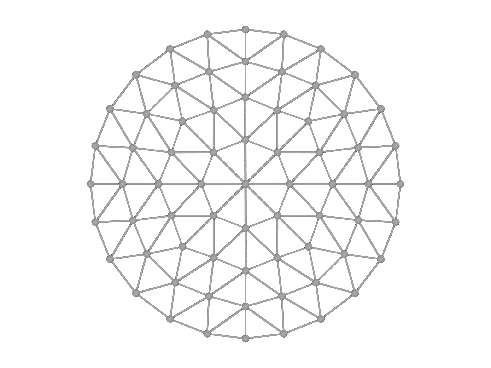
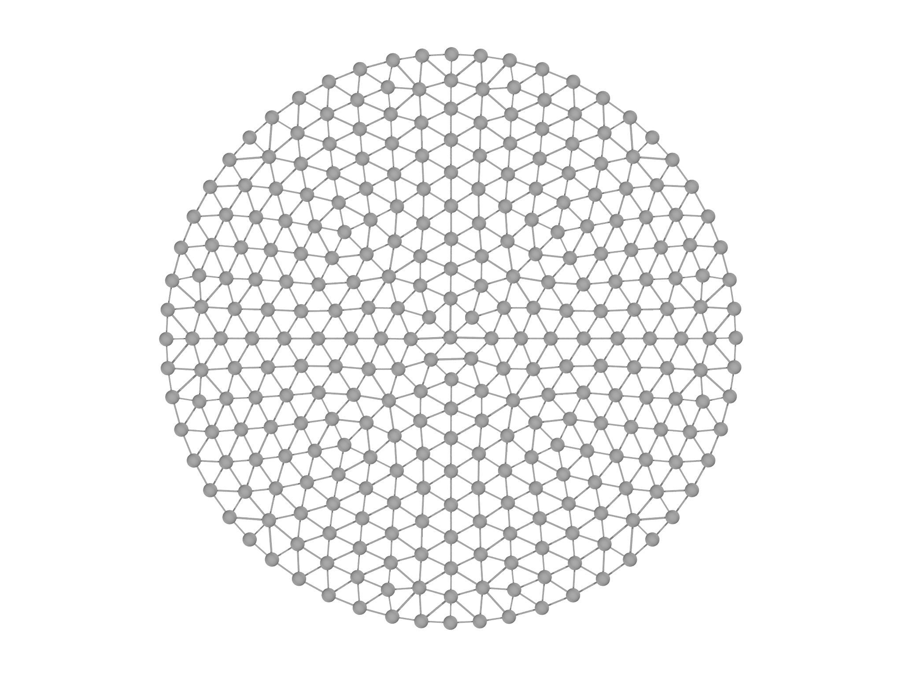
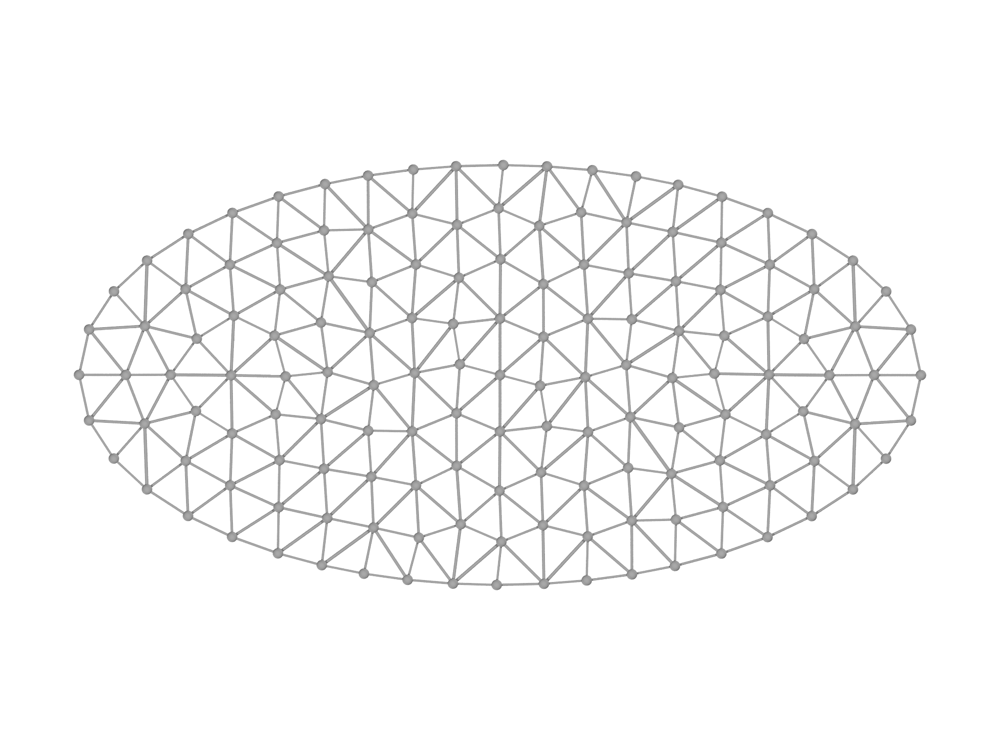
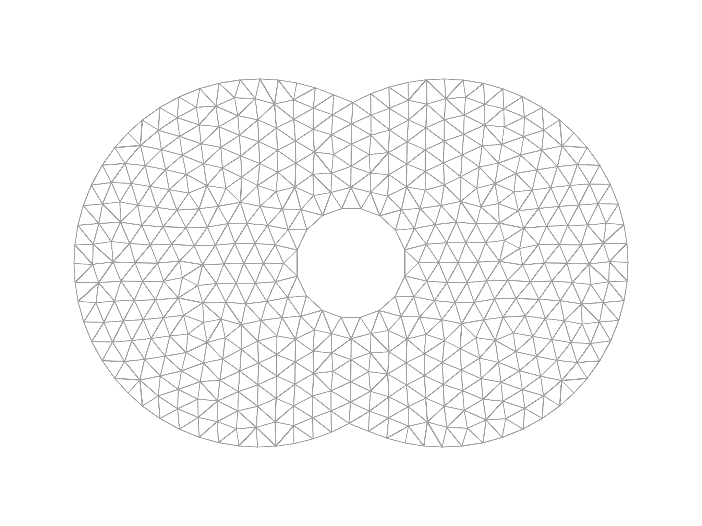

The meshgen module
The meshgen module conveniently produces high quality meshes for many
kinds of domain. It follows the builder pattern with a MeshGen helper
object that performs the construction. To use meshgen, the user must
provide a scalar function that is positive everywhere that they want to
be meshed[^5]. For example, the interior of the unit disk in two
dimensions, is described by the function $$f(x,y)=1-(x^{2}+y^{2}).$$ To
create the corresponding Mesh, we must first specify a suitable morpho
function that describes the domain. This function will be called
repeatedly by MeshGen, which will pass it a position vector x. Hence,
the \((x,y)\) components must be accessed from the argument x by
indexing:
fn disk(x) {
return 1-(x[0]^2+x[1]^2)
}
Now that the function is specified, we can create a MeshGen object:
var mg = MeshGen(disk, [-1..1:0.2, -1..1:0.2])
The second parameter is a list of Ranges that provide overall bounds on the domain to be meshed. Here we will use \(x,y\in[-1,1]\). By setting the stepsize, the user can provide MeshGen with an overall suggestion of the resolution.
Finally, we create the Mesh by calling the build method:
var m = mg.build()
The resulting Mesh is shown in Fig. 5.1, left panel. A higher resolution Mesh can be generated by changing the Range objects passed to MeshGen:
var mg = MeshGen(disk, [-1..1:0.1, -1..1:0.1])
This generates a much higher resolution Mesh, with approximately four times the number of vertices as shown in Fig. 5.1, right panel.

MeshGen can also mesh more complicated domains. To facilitate this, it provides a Domain class that accepts a scalar function in its constructor. For example, this code creates an ellipse as shown in Fig. 5.2, left panel:
var e0 = Domain(fn (x) -((x[0]/2)^2+x[1]^2-1))
var mg = MeshGen(e0, [-2..2:0.2, -1..1:0.2])
var m = mg.build()
The benefit of this is that Domain objects can be combined using set
operation methods union, intersection and difference. To
illustrate the possibilities with this, we use a special constructor to
create three domains corresponding to disks,
var a = CircularDomain(Matrix([-0.5,0]), 1)
var b = CircularDomain(Matrix([0.5,0]), 1)
var c = CircularDomain(Matrix([0,0]), 0.3)
then combine them,
var dom = a.union(b).difference(c)
and mesh the resulting domain,
var mg = MeshGen(dom, [-2..2:0.1, -1..1:0.1], quiet=false)
var m = mg.build()
with the result shown in Fig. 5.2, right panel.

Three dimensional meshes are created very similarly. Here we create a spherical mesh, displayed in Fig. 5.3
var dh = 0.2
var dom = Domain(fn (x) -(x[0]^2+x[1]^2+x[2]^2-1))
var mg = MeshGen(dom, [-1..1:dh, -1..1:dh, -1..1:dh])
var m = mg.build()